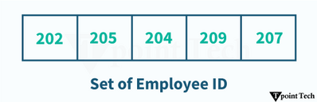

In Python, a Set is one of the four built-in data types used to store numerous items in a single variable. Set is an unindexed and unordered collection of unique elements. For example, a set is suitable option when storing information about employee IDs as these IDs cannot have duplicates.
Let us take a look at a simple example of a set.
Example
# creating a Set
S = {202, 205, 204, 209, 207}
print(S)
Output:
{209, 202, 204, 205, 207}In the above example, we have created a simple set consisting of multiple items. Here, we can see that the items in the initialized set are unordered.
A set is a mutable data type, meaning we can remove or add data elements to it. Python Sets are similar to the sets in mathematics, where we can perform operations like intersection, union, symmetric difference, and more.
Characteristics of Python Sets
Set in Python is a data type, which is:
- Unordered: Sets do not maintain the order of how elements are stored in them.
- Unindexed: We cannot access the data elements of sets.
- No Duplicate Elements: Each data element in a set is unique.
- Mutable (Changeable): Sets in Python allow modification of their elements after creation.
Creating a Set
Creating a set in Python is quite simple and easy process. Python offers two ways to create a set:
- Using curly braces
- Using set() function
Using Curly Braces
A set can be created by enclosing elements within curly braces '{}', separated by commas.
Let us see a simple example showing the way of creating a set using curly braces.
Example
# simple example to create a set using curly braces
int_set = {12, 6, 7, 9, 11, 10} # set of integers
print(int_set)
str_set = {'one', 'two', 'three', 'four', 'five'} # set of strings
print(str_set)
mixed_set = {12, 'tpointtech', 7.2, 6e2} # mixed set
print(mixed_set)
Output:
{6, 7, 9, 10, 11, 12}
{'one', 'three', 'two', 'four', 'five'}
{600.0, 'tpointtech', 12, 7.2}
In this example, we have used the curly braces to create different types of sets. Moreover, we can observe that a set can store any number of items of different types, like integer, float, tuple, string, etc. However, a set cannot store mutable elements like lists, sets, or dictionaries.
Using the set() Function
Python offers an alternative way of creating a set with the help of its built-in function called set(). This function allow us to create a set from a passed iterable.
The following example shows the way of using the set() function:
Example
# simple example to create a set using set() function
# given list
int_list = [6, 8, 1, 3, 7, 10, 4]
# creating set using set() function
int_set = set(int_list)
print("Set 1:", int_set)
# creating an empty set
empty_set = set()
print("Set 2:", empty_set)
Output
Set 1: {1, 3, 4, 6, 7, 8, 10}
Set 2: set()In the above example, we have used the set() function to create set from a given list. We have also created an empty set by using the set() function without any arguments.
Note: Creating an empty set is a bit tricky. Empty curly braces '{}' will make an empty dictionary in Python.
Accessing Elements of a Set
Since sets are unordered and unindexed, we cannot access the elements by position. However, we can iterate through a set with the help of loops.
Let us see a simple example showing the way of iterating through a set in Python.
Example
# simple example to show how to iterate through a set
# given set
set_one = {11, 17, 12, 5, 7, 8}
print("Given Set:", set_one)
# iterating through the set using for loop
print("Iterating through the Set:")
for num in set_one:
print(num)
Output:
Given Set: {17, 5, 7, 8, 11, 12}
Iterating through the Set:
17
5
7
8
11
12
In this example, we have used the 'for' loop to iterate through the elements of the given set.
Adding Elements to the Set
Python provides methods like add() and update() to add elements to a set.
- add(): This method is used to add a single element to the set.
- update(): This method is used to add multiple elements to the set.
Let us see a simple example showing the way of adding elements to the set in Python.
Example
# simple example to show how to add elements to the set
# given set
subjects = {'physics', 'biology', 'chemistry'}
print("Given Set:", subjects)
# adding a single element to the set
subjects.add('maths') # using add()
print("Updated Set (Added single element):", subjects)
# adding multiple elements to the set
subjects.update(['computer', 'english']) # using update()
print("Update Set (Added Multiple elements):", subjects)
Output:
Given Set: {'physics', 'biology', 'chemistry'}
Updated Set (Added single element): {'physics', 'biology', 'chemistry', 'maths'}
Update Set (Added Multiple elements): {'physics', 'chemistry', 'english', 'biology', 'computer', 'maths'}
In this example, we have given a set consisting of 3 elements. We have then used the add() method to add a new element to the set. We have also used the update() method to add multiple elements to the given set.
Removing Elements from the Set
In Python, we can easily remove elements from a given set using methods like remove(), discard(), pop(), and clear().
- remove(): This method allow us to remove a specific element from the set. It will raise a KeyError if the element is not found in the given set.
- discard(): This method is also used to remove a specified element from the set; however, it does not raise any error if the element is not found.
- pop(): This method is used to remove and returns a random element from the set.
Here is a simple example showing the working of these methods to remove elements from a set in Python.
Example
# simple example to show how to remove elements from the set
# given set
subjects = {'physics', 'chemistry', 'english', 'biology', 'computer', 'maths'}
print("Given Set:", subjects)
# removing a specified element from the set
subjects.remove('maths') # using remove()
print("Updated Set (Removed 'maths'):", subjects)
# removing a specified element from the set
subjects.discard('chemistry') # using discard()
print("Updated Set (Removed 'chemistry'):", subjects)
# removing a random element from the set
subjects.pop() # using pop()
print("Updated Set (Removed a random element'):", subjects)
# removing all elements from the set
subjects.clear() # using clear()
print("Updated Set (Removed all elements):", subjects)
Output:
Given Set: {'physics', 'chemistry', 'english', 'computer', 'biology', 'maths'}
Updated Set (Removed 'maths'): {'physics', 'chemistry', 'english', 'computer', 'biology'}
Updated Set (Removed 'chemistry'): {'physics', 'english', 'computer', 'biology'}
Updated Set (Removed a random element'): {'english', 'computer', 'biology'}
Updated Set (Removed all elements): set()
In this example, we have given a set consisting of six elements. We have then used the remove(), and discard() methods to remove the specified elements from the set. We have then used the pop() method to remove a random element from the set. At last, we have used the clear() method to remove all the elements from the given set. As a result, the set becomes empty.
Set Operations in Python
Similar to the Set Theory in Maths, Python sets also provide support to various mathematical operations like union, intersection, difference, symmetric difference and more.
Let us discuss some of these operations with the help of examples.
Union of Sets
In mathematical terms, union of sets A and B is defined as the set of all those elements which belongs to A or B or both and is denoted by A∪B.
A∪B = {x: x ∈ A or x ∈ B} For instance, let A = {1, 2, 3}, and B = {2, 3, 4, 5}. Therefore, A∪B = {1, 2, 3, 4, 5}.
Similarly in Python, we can perform union of sets by combining their elements, and eliminating duplicates with the help of the | operator or union() method.
Let us see a simple example showing the union of sets in Python.
Example
# simple example on union of sets
set_A = {1, 2, 3} # set A
print("Set A:", set_A)
set_B = {2, 3, 4, 5} # set B
print("Set B:", set_B)
print("\nUnion of Sets A and B:") # union of sets
print("Method 1:", set_A | set_B) # using |
print("Method 2:", set_A.union(set_B)) # using union()
Output
Set A: {1, 2, 3}
Set B: {2, 3, 4, 5}
Union of Sets A and B:
Method 1: {1, 2, 3, 4, 5}
Method 2: {1, 2, 3, 4, 5}
In the above example, we have defined two sets and performed their union using the | operator and union() method.
Intersection of Sets
In mathematical terms, intersection of two sets A and B is defined as the set of all those elements which belongs to both A and B and is denoted by A∩B.
A∩B = {x: x ∈ A and x ∈ B}For instance, let A = {1, 2, 3}, and B = {2, 3, 4, 5}. Therefore, A∩B = {2, 3}.
Similarly in Python, we can perform intersection of sets by using the & operator or intersection() method to return the elements common in both sets.
Let us see a simple example showing the intersection of sets in Python.
Example
# simple example on intersection of sets
set_A = {1, 2, 3} # set A
print("Set A:", set_A)
set_B = {2, 3, 4, 5} # set B
print("Set B:", set_B)
print("\nIntersection of Sets A and B:") # intersection of sets
print("Method 1:", set_A & set_B) # using &
print("Method 2:", set_A.intersection(set_B)) # using intersection()
Output:
Set A: {1, 2, 3}
Set B: {2, 3, 4, 5}
Intersection of Sets A and B:
Method 1: {2, 3}
Method 2: {2, 3}
In the above example, we have defined two sets and performed their intersection using the & operator and intersection() method.
Difference of Sets
In mathematical terms, difference of two sets A and B is defined as the set of all those elements which belongs to A, but do not belong to B and is denoted by A-B.
A-B = {x: x ∈ A and x ∉ B} For instance, let A = {1, 2, 3}, and B = {2, 3, 4, 5}. Therefore, A-B = {1} and B-A = {4, 5}.
Similarly in Python, we can perform difference of sets by using the - operator or difference() method to return the elements present in the first set but not in the second one.
Let us see a simple example showing the difference of sets in Python.
Example
# simple example on difference of sets
set_A = {1, 2, 3} # set A
print("Set A:", set_A)
set_B = {2, 3, 4, 5} # set B
print("Set B:", set_B)
print("\nA - B:") # difference of sets
print("Method 1:", set_A - set_B) # using -
print("Method 2:", set_A.difference(set_B)) # using difference()
print("\nB - A:")
print("Method 1:", set_B - set_A) # using -
print("Method 2:", set_B.difference(set_A)) # using difference()
Output:
Set A: {1, 2, 3}
Set B: {2, 3, 4, 5}
A - B:
Method 1: {1}
Method 2: {1}
B - A:
Method 1: {4, 5}
Method 2: {4, 5}
In the above example, we have defined two sets and performed their difference using the - operator and difference() method.
Set Comprehension
In Python, set comprehension allows us to create sets in a concise and easy way.
The following example demonstrates how set comprehension works in Python:
Example:
# simple example on set comprehension
# creating a set of square of numbers
set_of_squares = {i**2 for i in range(6)}
print(set_of_squares)
# creating a set of cube of numbers
set_of_cubes = {i**3 for i in range(6)}
print(set_of_cubes)
Output:
{0, 1, 4, 9, 16, 25}
{0, 1, 64, 8, 27, 125}
In the above example, we have used the set comprehension to create the desired set.
Frozenset in Python
A frozenset is an immutable version of a set, meaning we cannot add or remove elements from it once created. We can create a frozeset object using Python's built-in function called frozenset().
Let us see a simple example showing how to create a frozenset in Python.
Example
# simple example to create a frozenset
# using the frozenset() function
imm_set = frozenset(['one', 'two', 'three', 'four', 'five'])
# printing results
print(imm_set)
print(type(imm_set)) # returning type
Output
frozenset({'two', 'one', 'five', 'four', 'three'})
< class 'frozenset' >
In the above example, we have used the frozenset() function to return the frozenset object of the passed iterable.
Frozensets are hashable objects that can be used as keys in dictionaries or elements of other sets.
Python Set Methods
In Python, set methods are used to manipulate the data of a set in an effective and efficient way. These methods allow us to add, remove, and update the elements of sets. Sets in Python, is an unordered and mutable data type allowing us to store a collection of unique objects in a single variable.
Let us take a look at various Set methods available in Python.
| Method | Description |
|---|---|
| add() | This method is utilized to add a data element to the set. |
| clear() | This method is utilized to remove all data elements from the set. |
| copy() | This method is used to return a shallow copy of the set. |
| discard() | This method is used to remove a data element if it is a member. It will not return any error if the specified element is not found in the set. |
| remove() | This method is utilized to remove a data element from the given set; however, it raises a KeyError if the specified element is not found. |
| pop() | This method is used to remove and return an arbitrary element. |
| update() | This method is utilized to add elements from other sets or iterables. |
1) add()
The add() method is used to add a new element to a set while ensuring uniqueness. If the passed element already exists, the set remains unchanged.
The syntax of the add() method is shown below:
Syntax:
set_name.add(item)We will now look at a simple example showing the use case of set's add() method in Python.
Example
# python program to show the use of set add() method
# creating a set
set_of_fruits = {'apple', 'mango', 'banana', 'orange', 'guava'}
# printing the set
print("Set of Fruits:", set_of_fruits)
# using the add() method
set_of_fruits.add('grapes')
# printing the updated set
print("Updated Set of Fruits:", set_of_fruits)
Output:
Set of Fruits: {'banana', 'orange', 'apple', 'guava', 'mango'}
Updated Set of Fruits: {'banana', 'orange', 'apple', 'guava', 'mango', 'grapes'}
In the above example, we have used the add() method to add a new element 'grapes' to the given set.
2) clear()
The clear() method is utilized to remove all the elements from the given set.
The following is the syntax of the clear() method:
Syntax:
set_name.clear()We will now look at an example to understand the working of set's clear() method in Python.
Example
# python program to show the use of set clear() method
# creating a set
game_set = {'football', 'cricket', 'volleyball', 'basketball', 'hockey'}
# printing the set
print("Given Set:", game_set)
# using the clear() method
game_set.clear()
# printing the updated set
print("Updated Set:", game_set)
Output:
Given Set: {'basketball', 'hockey', 'football', 'cricket', 'volleyball'}
Updated Set: set()
In the above example, we have used the clear() method to remove all the elements from the given set.
3) copy()
The copy() method is used to return a shallow copy of the set in Python.
Here is the syntax of the copy() method:
Syntax:
set_name.copy()We will now see an example showing the use of set's copy() method in Python.